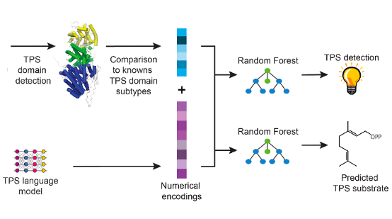

|
Petr Kouba I'm a PhD student working jointly at CIIRC in Prague and at Loschmidt Laboratories (LL) in Brno, Czech Republic. I am supervised by Josef Šivic with Jiří Sedlář (CIIRC) and by Stas Mazurenko (LL). The focus of my research is Machine Learning for Protein Engineering. I'm interested in machine learning methods for protein design and in methods utilizing data on protein dynamics. Before my PhD, I obtained an MSc degree in Computer Vision from CTU in Prague and an MSc degree in Physics from ETH Zurich. I was awarded the Brno PhD Talent scholarship. Email / Google Scholar / LinkedIn / Github |
{kind=link}
ResearchCurrently, I am working on Machine Learning for Dynamics-Aware Protein Design. My past projects can be found below: |
|
|
Learning to design protein-protein interactions with enhanced generalization
Anton Bushuiev, Roman Bushuiev, Petr Kouba, Anatolii Filkin, Marketa Gabrielova, Michal Gabriel, Jiri Sedlar, Tomas Pluskal, Jiri Damborsky, Stanislav Mazurenko, Josef Sivic International Conference on Learning Representations (ICLR), 2024 webserver / code / dataset / arXiv Introducing a large dataset of protein-protein interfaces and a model for predicting the change in binding affinity of two protein structures upon mutation (ddG prediction). |
|

|
Accurate predictions of enzymatic biochemistry as an enabler for generation of de-novo sequences
Raman Samusevich, Petr Kouba, Roman Bushuiev, Anton Bushuiev, Josef Sivic, Tomas Pluskal GEM Workshop at ICLR, 2024 openreview Workshop paper about the work on classifying potential protein sequences of Terpene synatases (TPS) and its utility for generative design of novel TPSs. |
|
|
CoVAMPnet: Comparative Markov State Analysis for Studying Effects of Drug Candidates on Disordered Biomolecules
Sérgio M. Marques, Petr Kouba, Anthony Legrand, Jiri Sedlar, Lucas Disson, Joan Planas-Iglesias, Zainab Sanusi, Antonin Kunka, Jiri Damborsky, Tomas Pajdla, Zbynek Prokop, Stanislav Mazurenko, Josef Sivic, David Bednar JACS Au, 2024 paper / code / data / bioRxiv Introducing a method CoVAMPnet for interpretation and comparison of Markov State Models of Molecular Dynamics. The method is demonstrated on a case study of comparing dynamics of different systems of Aβ 42 peptide. |

|
Machine Learning-Guided Protein Engineering
Petr Kouba, Pavel Kohout, Faraneh Haddadi, Anton Bushuiev, Raman Samusevich, Jiri Sedlar, Jiri Damborsky, Tomas Pluskal, Josef Sivic, Stanislav Mazurenko ACS Catalysis, 2023 paper Perspective and survey on challenges in Protein Engineering and progress enabled by Machine Learning. |
Teaching
Hands-On Computational Enzyme Design Course (2023 - present)
Reading Group on Machine Learning for Molecular Biology (2021 - present) |
Conferences and presentations03/11/24 - Attended the Dagstuhl Seminar on ML for Protein-Protein and Protein-Ligand Interactions (invited), Dagstuhl 15/10/24 - I gave a popularization talk on AI for Protein Design in the Science Hub of JCMM, Brno 20/09/24 - Talk on ML-based engineering of dynamic proteins at the 5th Joint Workshop of CIIRC & MU – ICRC, Prague 11/05/24 - We presented our workshop paper at GEM Workshop at ICLR 2024, Vienna 07/05/24 - We presented our paper at ICLR 2024, Vienna 14/02/24 - Tutorial on ML for Protein Design at 5th Hands-on Computational Enzyme Design Workshop 2024, Brno 15/11/23 - 2 posters at ELIXIR 3D-BioInfo conference 2023, Prague 23/09/23 - Talk on Dynamics-Aware Protein Design at 4th Joint Workshop of CIIRC & MU – ICRC, Brno 17/07/23 - Talk on CoVAMPnet at MIT-IOCB Biochemical Machine Learning Symposium 2023, Prague 01/06/23 - Tutorial on ML for Protein Design at 4th Hands-on Computational Enzyme Design Workshop 2023, Brno 25/05/23 - Presented my PhD topic of "ML for Protein Dynamics" at RECETOX Doctoral Conference 2023, Brno 28/03/23 - Talk on behalf of Work pillar 2.4 at the Workshop of National Institute for Neurological Research, Prague 21/09/22 - Presentation of MSMs of Aβ peptide's dynamics at 3rd Joint Workshop of CIIRC & MU – ICRC 2022, Prague 08/09/22 - Poster at 8th Prague-Weizmann Summer School 2022, Prague 14/07/22 - Poster at MMSML Workshop 2022, Barcelona 25/05/22 - Poster at RECETOX Doctoral Conference 2022, Brno
15/12/21 - Presented my PhD project in the final of the Brno PhD Talent competition, Brno 21/10/21 - Presented Fast end-to-end learning on protein surfaces at the Reading group in Pattern Recognition, online 23/09/21 - Presentation on Protein representations for neural networks at 2nd Joint Workshop of CIIRC & MU – ICRC, Brno |
Education
Czech Technical University in Prague (2021)
ETH Zurich (2019)
Charles University (2017) |
|
This page is using the design provided by Jon Barron. The photo was taken by David Damborský. |